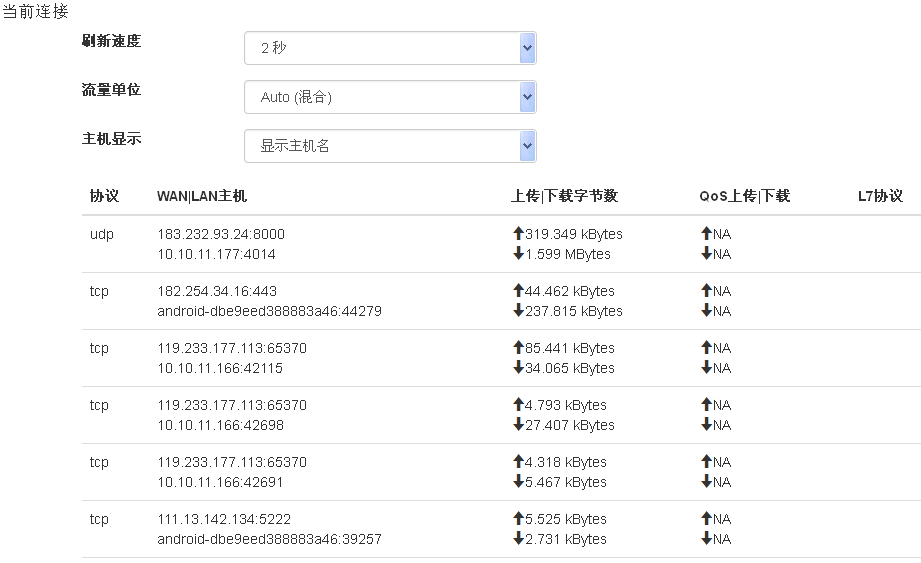

网络类应用¶
无线设置¶
{kind=link}
This chapter lists the backwards incompatible changes introduced in Shellgui 2.0, and the steps that are needed for upgrading your code.
2.4G网络¶
- SSID 密码
5G网络¶
- SSID 密码
上网设置¶
{kind=link}
This chapter lists the backwards incompatible changes introduced in Shellgui 2.0, and the steps that are needed for upgrading your code.
The incompatibilities are not dramatic. The biggest change is that all decoding functions now require and extra parameter. Most programs can be modified to work with 2.0 by adding a 0 as the second parameter to all calls of json_loads(), json_loadf() and json_load_file().
pppoe 上网¶
Shellgui 2.0 is backwards incompatible with the Shellgui 1.x releases. It is ABI incompatible, i.e. all programs dynamically linking to the Shellgui library need to be recompiled. It’s also API incompatible, i.e. the source code of programs using Shellgui 1.x may need modifications to make them compile against Shellgui 2.0.
All the 2.x releases are guaranteed to be backwards compatible for both ABI and API, so no recompilation or source changes are needed when upgrading from 2.x to 2.y.
dhcp 上网¶
- Decoding flags
- For future needs, a flags parameter was added as the second parameter to all decoding functions, i.e. json_loads(), json_loadf() and json_load_file(). All calls to these functions need to be changed by adding a 0 as the second
静态地址 上网¶
argument. For example:
/* old code */ json_loads(input, &error); /* new code */ json_loads(input, 0, &error);
高级功能¶
- 克隆网卡
克隆一个虚拟的 wan
- 同步ppp拨号
全局开启同步ppp拨号
- MAC地址
使用特点MAC地址
- Underlying type of JSON integers
The underlying C type of JSON integers has been changed from int to the widest available signed integer type, i.e. long long or long, depending on whether long long is supported on your system or not. This makes the whole 64-bit integer range available on most modern systems.
jansson.h has a typedef json_int_t to the underlying integer type. int should still be used in most cases when dealing with smallish JSON integers, as the compiler handles implicit type coercion. Only when the full 64-bit range is needed, json_int_t should be explicitly used.
- Maximum encoder indentation depth
- The maximum argument of the JSON_INDENT() macro has been changed from 255 to 31, to free up bits from the flags parameter of json_dumps(), json_dumpf() and json_dump_file(). If your code uses a bigger indentation than 31, it needs to be changed.
- Unsigned integers in API functions
- Version 2.0 unifies unsigned integer usage in the API. All uses of unsigned int and unsigned long have been replaced with size_t. This includes flags, container sizes, etc. This should not require source code changes, as both unsigned int and unsigned long are usually compatible with size_t.
局域网设置¶
{kind=link}
This chapter lists the backwards incompatible changes introduced in Shellgui 2.0, and the steps that are needed for upgrading your code.
局域网IP设置¶
- 设置局域网IP和掩码
DHCP设置¶
- 设置DHCP服务器信息
高级设置¶
{kind=link}
This chapter lists the backwards incompatible changes introduced in Shellgui 2.0, and the steps that are needed for upgrading your code.
UPnP协议¶
- UPnP协议开关
- UPnP协议状态列表
DHCP的静态IP分配¶
- DHCP的静态IP绑定分配
动态域名解析¶
- 动态域名解析
端口转发¶
- 端口转发
DMZ¶
- DMZ
连接限制¶
{kind=link}
This chapter lists the backwards incompatible changes introduced in Shellgui 2.0, and the steps that are needed for upgrading your code.
{kind=link}
网络诊断¶

This chapter lists the backwards incompatible changes introduced in Shellgui 2.0, and the steps that are needed for upgrading your code.
网络诊断¶
- 网络诊断
局域网唤醒¶
{kind=link}
This chapter lists the backwards incompatible changes introduced in Shellgui 2.0, and the steps that are needed for upgrading your code.
局域网唤醒¶
- 局域网唤醒
连接主机¶
{kind=link}
This chapter lists the backwards incompatible changes introduced in Shellgui 2.0, and the steps that are needed for upgrading your code.
{kind=link}
当前DHCP租约¶
{kind=link}
已连接的无线主机¶

主机活动连接数¶
{kind=link}
手机USB共享上网¶

This chapter lists the backwards incompatible changes introduced in Shellgui 2.0, and the steps that are needed for upgrading your code.
手机USB共享上网¶
- 手机USB共享上网
{kind=link}
{kind=link}
{kind=link}
{kind=link}
{kind=link}
{kind=link}
交换机VLan¶

This chapter lists the backwards incompatible changes introduced in Shellgui 2.0, and the steps that are needed for upgrading your code.
交换机VLan¶
- 交换机VLan
网速测试¶
{kind=link}
This chapter lists the backwards incompatible changes introduced in Shellgui 2.0, and the steps that are needed for upgrading your code.
网速测试¶
- 网速测试
{kind=link}
{kind=link}
DNS CDN 加速¶
{kind=link}
This chapter lists the backwards incompatible changes introduced in Shellgui 2.0, and the steps that are needed for upgrading your code.
开启DNS CDN 加速¶
{kind=link}
设置DNS CDN¶
{kind=link}
带宽分布图¶
{kind=link}
宽带分布图 应用，用于显示一定时间段内宽带数据的流向分布。 本应用分为两部分：
饼状图¶
{kind=link}
饼状图图例上方的控件可用于调整显示时间频段、时间段以及显示方式。 例如要查看11月11日整天的数据流量分布，可以这样设置控件：
{kind=link}
要查看今天13:15-13:30这一刻钟内的流量分布情况，可以这样设置：
{kind=link}
控件设置的变化，不仅会影响到饼状图，还会同时反映到数据表的显示。
点击图例中的主机列表可以对主机信息是否显示进行切换。
数据表¶
{kind=link}
负载均衡¶
{kind=link}
This chapter lists the backwards incompatible changes introduced in Shellgui 2.0, and the steps that are needed for upgrading your code.
负载均衡¶
- 负载均衡
连接列表¶

This chapter lists the backwards incompatible changes introduced in Shellgui 2.0, and the steps that are needed for upgrading your code.
{kind=link}
Shadowsocks¶
{kind=link}
This chapter lists the backwards incompatible changes introduced in Shellgui 2.0, and the steps that are needed for upgrading your code.
Shadowsocks¶
- Shadowsocks
OpenVPN¶
{kind=link}
This chapter lists the backwards incompatible changes introduced in Shellgui 2.0, and the steps that are needed for upgrading your code.
OpenVPN¶
- OpenVPN
{kind=link}
{kind=link}